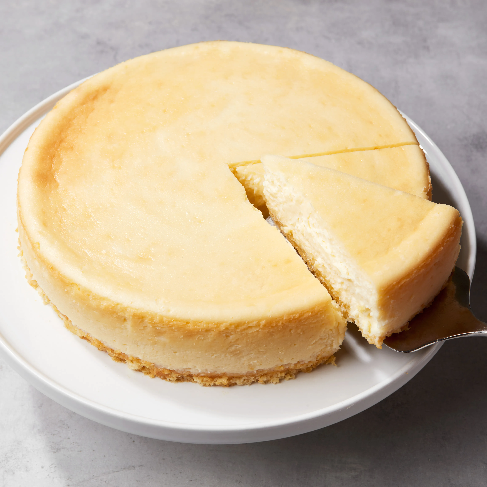

Cheesecake

Description
Cheesecake using Philadelphia, an iconic cream cheese brand.
Ingredients
- Graham Cracker Crumbs
- Butter
- 1 + 1/4 cups Sugar
- Cream Cheese
- Sour Cream
- Two teaspoons of vanilla
- Three whole eggs
- Pie Filling (Optional)
Steps
- Make the crust by mixing the graham cracker crumbs, melted butter, and some of the sugar in a bowl. Use your fingertips to press the mixture into the bottom of a springform pan.
- Make the filling by beating the cream cheese and sugar until smooth. Mix in the sour cream and vanilla. Beat in the eggs one at a time on low speed. Pour the filling over the crust.
- Bake the cheesecake in a preheated oven until the filling is almost set. Run a knife around the rim to loosen the sides and allow it to cool before removing it from the pan.
- Refigerate the cheesecake for at least four hours before serving.
Back